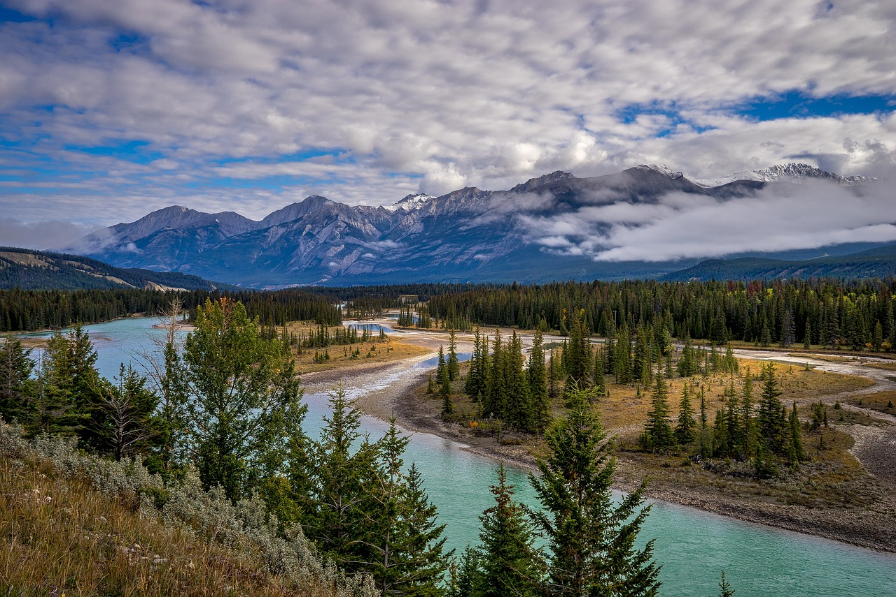

The second-largest nation in the world, Canada is home to a wide variety of landscapes, energetic cities, and a rich cultural legacy. Travelers may explore Canada's diverse cities, including the breathtaking Rocky Mountains and the urban centers of Toronto and Vancouver, as well as its natural beauty and distinctive history. Here's a comprehensive guide to help you discover Canada's wonders:
Vancouver, a city where mountains and the ocean converge, is a great place to begin your Canadian experience. Discover Stanley Park, a sizable urban green area that is home to the Vancouver Aquarium and beautiful seawall walks. Gastown enchants with its cobblestone lanes and the famous Steam Clock, while Granville Island entices with its lively public market and artist workshops. Grouse Mountain provides hiking and skiing in the summer and winter, as well as breathtaking views from the Skyride gondola, for those who enjoy outdoor activities. There are exhilarating walks in Capilano Suspension Bridge Park among towering trees, and Whistler, which is nearby, is a refuge for skiing, mountain biking, and opulent resorts.
Visit Banff National Park in Alberta, a UNESCO World Heritage site renowned for its breathtaking scenery. Discover the azure depths of Lake Louise and Moraine Lake, encircled by majestic Alps. Take a hike through verdant forests to the waterfalls of Johnston Canyon, or ride the Banff Gondola to enjoy expansive vistas of the Rockies. Sunshine Village and Lake Louise Ski Resort in Banff are two places where you may go skiing and snowboarding throughout the winter months. Unwind in the town of Banff's hot springs or treat yourself to opulence at the Fairmont Banff Springs Hotel, dubbed the "Castle in the Rockies."
Travel east to Toronto, the energetic capital of Ontario located on Lake Ontario's shoreline. Explore top-notch institutions like the Art Gallery of Ontario and the Royal Ontario Museum. Take in the amazing city views from the top of the famous CN skyscraper, and if you dare, take a thrilling stroll around the edge of the skyscraper without using your hands. Discover a variety of areas where modern shops and restaurants are housed in old buildings, such as Kensington Market and the Distillery District. Take in a show at one of the famous theaters in the Entertainment District, or catch a game at the Rogers Centre.
Experience Quebec's Québec City, a UNESCO World Heritage site, and its vintage charm. Explore the cobblestone lanes of Petit-Champlain, the oldest commercial center in North America, and stroll along the defensive walls of Old Quebec. Explore the renowned Château Frontenac, a stately hotel with a stunning view of the St. Lawrence River. Savor the flavors of French Canada with dishes like poutine and sweets made with maple syrup. Summertime brings cultural events and alfresco eating in Place Royale, while winter brings parades, ice sculptures, and outdoor festivities to the streets as part of the Quebec Winter Carnival.
Experience the breathtaking force of Niagara Falls, which spans the border between New York State and Ontario. Experience the mist of Horseshoe Falls by taking a Maid of the Mist boat excursion, or go beneath the falls for a different viewpoint. Explore the quaint wineries and historic attractions of Niagara-on-the-Lake or take in the expansive vistas from the Skylon Tower. Niagara Parks extends beyond the falls to include hiking paths, botanical gardens, and attractions such as the Butterfly Conservatory. Come during the Winter Festival of Lights to witness the falls bathed in vibrant lights.
Explore Montreal, the cultural center of Quebec, where North American vigor blends with European grace. Discover the Old Montreal neighborhood, known for its lively shoreline, Notre-Dame Basilica, and cobblestone streets. Explore the Montreal Museum of Fine Arts or go to events such as the Just for Laughs comedy festival and the Montreal International Jazz Festival. Savor the gastronomic delights of Montreal, which range from classic foods like bagels and smoked meat sandwiches to French-inspired cuisine in upscale restaurants. In addition to providing expansive views of the metropolitan skyline, Mount Royal Park includes hiking paths, gardens, and Beaver Lake as a natural getaway.
Discover Atlantic Canada, which consists of the eastern Canadian provinces of Nova Scotia, New Brunswick, Prince Edward Island, and Newfoundland and Labrador. Visit the Maritime Museum of the Atlantic and the Halifax Citadel to learn about Halifax's maritime past. For views of the ocean and a taste of Celtic culture, drive the Cabot Trail via the Cape Breton Highlands National Park. See the red sand beaches of Prince Edward Island and Green Gables, the setting for the well-known book by Lucy Maud Montgomery. Discover the historic alleys of Saint John and the greatest tides in the Bay of Fundy when visiting New Brunswick. Explore the untamed coastline, bays teeming with icebergs, and vibrant fishing communities like St. John's of Newfoundland.
Travel to the Yukon and Northwest Territories in Canada's north, where unspoiled nature and vibrant indigenous cultures await you. Travel back in time to the Klondike Gold Rush by hiking the Chilkoot Trail and exploring the glaciers of Kluane National Park in Yukon. Explore the striking canyons of the Nahanni River by canoe, or see the aurora borealis shimmering across the night sky in Yellowknife, Northwest Territories. Visit cultural institutions like the Yukon Beringia Interpretive Centre and the Great Northern Arts Festival in Inuvik to learn about indigenous customs and artwork.
See Calgary, the modern metropolis in Alberta and home to the world-famous Calgary Stampede, a rodeo and western celebration. Take in the expansive vistas of the Rocky Mountains and the city skyline by hiking the trails of Nose Hill Park or seeing the art and history exhibitions at the Glenbow Museum. In close proximity, the Royal Tyrrell Museum in Drumheller and the hoodoos (rock formations) of Dinosaur Provincial Park showcase prehistoric fossil finds from Alberta's Badlands. Learn about paleontology and the prehistoric past of the area by going on a guided tour.
Take a ferry to Vancouver Island, a veritable paradise with untamed coastlines, verdant rainforests, and quaint towns. Discover the British colonial architecture, Inner Harbor, and the recognizable Empress Hotel of Victoria, the provincial capital. See the flower displays at Butchart Gardens and the underwater exhibits at the Shaw Centre for the Salish Sea. Take the Pacific Rim Highway to Tofino to see whales in Clayoquot Sound and surf Chesterman Beach. For a look at the coastal life, take a hike in Strathcona Provincial Park's old-growth forests or go kayaking on the Broken Group Islands.
Major cities and areas are connected by domestic aircraft, trains, and buses in Canada's extensive and well-maintained transportation network. The best way to see far-off places and national parks is by renting a car. There are many different types of lodging available, ranging from luxurious hotels and resorts to affordable hostels, bed & breakfasts, and vacation rentals. Canada uses the Canadian Dollar (CAD) as its official currency, which is widely recognized nationwide along with major credit cards. Explore the natural beauties of Banff National Park, indulge in poutine in Montreal, or be in awe of the sheer force of Niagara Falls—Canada provides an amazing trip full of varied landscapes, priceless cultural artifacts, and friendly people.